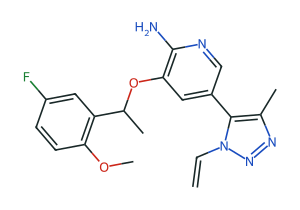

对照结构实施例 · 来源
WT ALK 酶 KiL1196M 酶 KiWT 细胞 IC50L1196M 细胞 IC50
MWcLogPTPSARotB
WO2011138751A2
家族 44278717 · 优先权 2010-05-04 · 活性表 PDF p.186 · assay 2/3 与细胞 ELISA

2.90 nM
18.0 nM
144 nM
950 nM
369.43.6288.16

0.620 nM
2.75 nM
未测 · 原表空白
未测 · 原表空白
356.43.9686.05
A

0.536 nM
3.16 nM
33.0 nM
177 nM
370.43.9775.25
WO2013132376A1
家族 48142828 · 优先权 2012-03-06 · 活性表 Table 1 PDF p.436

<0.200 nM
0.78 nM
1.33 nM
20.7 nM
406.42.80110.10

<0.200 nM
1.20 nM
28.1 nM
184 nM
392.42.24110.10
B

<0.200 nM
1.93 nM
6.41 nM
97.1 nM
381.42.6886.30
洛拉替尼发现论文
Johnson et al., 2014 · ChEMBL 文档 CHEMBL3286195 · 29 个结构 · 247 条观测（含 MDR1 外排比、LogD、微粒体清除率）
L1 · 待确认